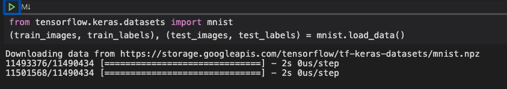

Chapter 3: Running the MINST Demo
Import the MNIST dataset. Put 60K into training and 10K into test.
| from tensorflow.keras.datasets import mnist
(train_images, train_labels), (test_images, test_labels) = mnist.load_data()
|

Getting the Shape of Data
The shape function will tell is the dimensions of the input dataset:
There are 60,000 training images that are 28 by 28 pixels.
TensorFlow Optimization Errors
| 2022-04-08 14:38:30.403775: I tensorflow/core/platform/cpu_feature_guard.cc:151] This TensorFlow binary is optimized with oneAPI Deep Neural Network Library (oneDNN) to use the following CPU instructions in performance-critical operations: AVX2 FMA
To enable them in other operations, rebuild TensorFlow with the appropriate compiler flags.
|